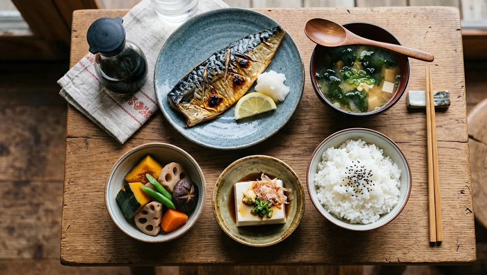

Cardiólogo en Elche · Clínica Elche Salud
Evidencia científica · Análisis clínico · Aplicación en nuestro entorno

En los últimos años, Japón y sus hábitos han despertado un gran interés más allá de sus fronteras: su población es una de las más longevas del mundo y presenta algunas de las tasas más bajas de obesidad y enfermedad cardiovascular.
Evidentemente, no hay un determinante único: probablemente responda a una combinación de factores culturales, sociales, sanitarios y, claro, hábitos y alimentación. La Japan Atherosclerosis Society lo denomina "The Japan Diet", mientras que en Occidente nos referimos a él como Dieta japonesa tradicional o Washoku. Este patrón ha despertado un gran interés por sus efectos protectores.
Aunque variable entre regiones, existen elementos comunes que definen este patrón: alimentación equilibrada, basada en alimentos frescos, marinos y vegetales, técnicas de cocina sencillas y un fuerte énfasis en la moderación.[5–8]
Riqueza en fibra, vitaminas y antioxidantes procedentes de frutas y verduras; selección de fuentes de proteínas saludables priorizando pescado y vegetales; alta ingesta de Omega-3 y esteroles vegetales; abundante hidratación y beneficios del té verde; escaso consumo de azúcares. Todo acompañado de actividad regular, cocinado suave y alimentación consciente.
Estudio longitudinal desde los años 70. Estudia la relación entre la excepcional longevidad de la población de Okinawa —la región con más centenarios del mundo— y su estilo de vida. Sostiene de forma sólida que la adherencia a este patrón dietético es en gran parte responsable de esa esperanza de vida.[9–11]
Sigue la relación entre hábitos de la población y enfermedad cardiovascular. Confirma la menor incidencia de enfermedad cardiovascular —sobre todo cerebrovascular— a mayor adherencia a la Dieta Japonesa Tradicional.[12,13]
Trabajos recientes, incluyendo completas revisiones y metaanálisis, lo confirman: "la alta adherencia a la Dieta tradicional japonesa se asocia con una reducción del riesgo de enfermedad y mortalidad cardiovascular".[14,15]
Los hay, como en todo:
Toda la evidencia a su favor se basa en estudios observacionales — sólidos y con grandes cohortes, pero observacionales. No cuenta con ensayos clínicos que lo respalden como los que existen con la Dieta Mediterránea.
Reproducir este patrón en países occidentales resulta poco realista: muchos ingredientes no son de consumo habitual, las técnicas culinarias son muy diferentes, y trasladar la dieta sin incorporar el resto de los hábitos podría maximizar sus defectos (exceso de sal, arroz refinado). Además, como tantos otros patrones tradicionales, este se está perdiendo progresivamente por el avance de la dieta occidental y los procesados.
A diferencia de la dieta DASH o la Dieta Mediterránea, la dieta japonesa no figura entre las recomendaciones formales de la AHA o la ESC, pero muchas de sus recomendaciones se alinean bien con sus principios: aumento de verduras, fibra, pescado y proteína vegetal; reducción de carne roja y procesada; control del aporte energético y las raciones.[16–18]
Tratar de seguir de forma estricta la dieta japonesa en nuestro medio no parece la mejor estrategia. Sin embargo, podemos incorporar muchos de sus principios saludables:
Mi recomendación: no tratar de copiar este patrón, pero sí aprender de sus virtudes e integrarlas en nuestro contexto. El objetivo no es imponer pautas rígidas, sino contar con información de calidad que ayude a adaptar e individualizar.
Divulgación sobre nutrición, prevención cardiovascular y longevidad. Sígueme para contenido visual basado en evidencia.
Consulta cardiológica con valoración integral del riesgo cardiovascular y orientación personalizada sobre nutrición, ejercicio y hábitos.
Estrategias nutricionales para el control de la tensión arterial. Evidencia y aplicación práctica.
Leer artículo → PrevenciónLa apnea obstructiva del sueño como factor de riesgo cardiovascular: mecanismos, consecuencias y tratamiento.
Leer artículo → PrevenciónOptimización de salud con abordaje global: nutrición, ejercicio y prevención personalizada.
Ver detalles →